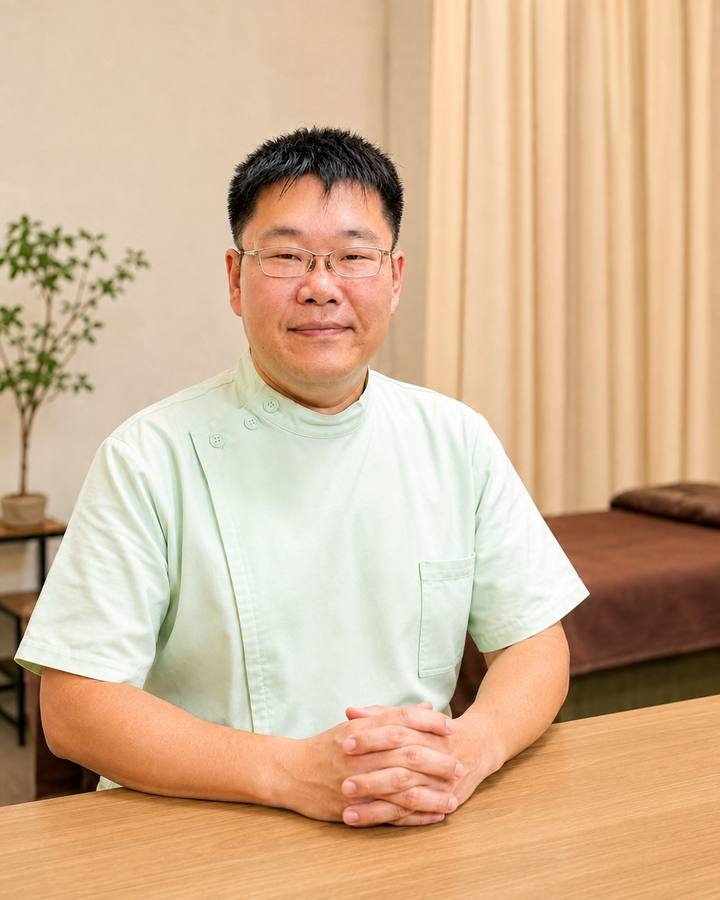
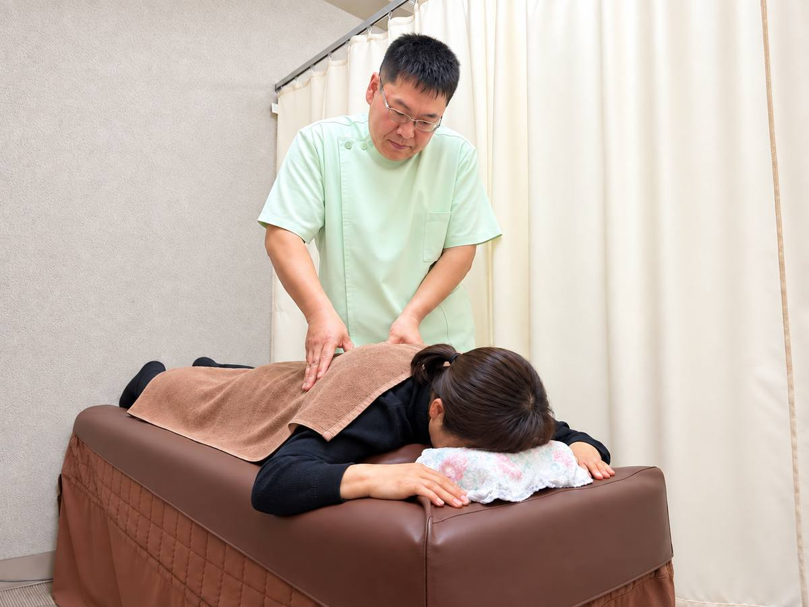

茨木市新中条町の整骨院です。国家資格(柔道整復師)を持つ者が施術します。平日は20時30分まで、土日祝も受付しています。

施術は、院長と柔道整復師のスタッフ1名が担当します。どちらも国家資格(柔道整復師)を持つ者です。
予約優先制です。電話またはLINEで、当日・前日のご予約もお受けしています。予約なしでも空きがあれば対応していますが、お待ちいただく場合や、ご案内できない場合があります。
いつから、どんなときに痛むのかをお聞きします。健康保険の対象になるかどうかも、ここでご説明します。
体の動きや姿勢を一緒に確かめます。
内容をご説明してから始めます。強い力でボキボキ鳴らすような施術は行いません。

次回までに気をつけることや、ご自宅でできるケアをお伝えします。
阪急 南茨木駅から徒歩8分です。駐車場は1台あります。お車の方は予約時にお伝えください。